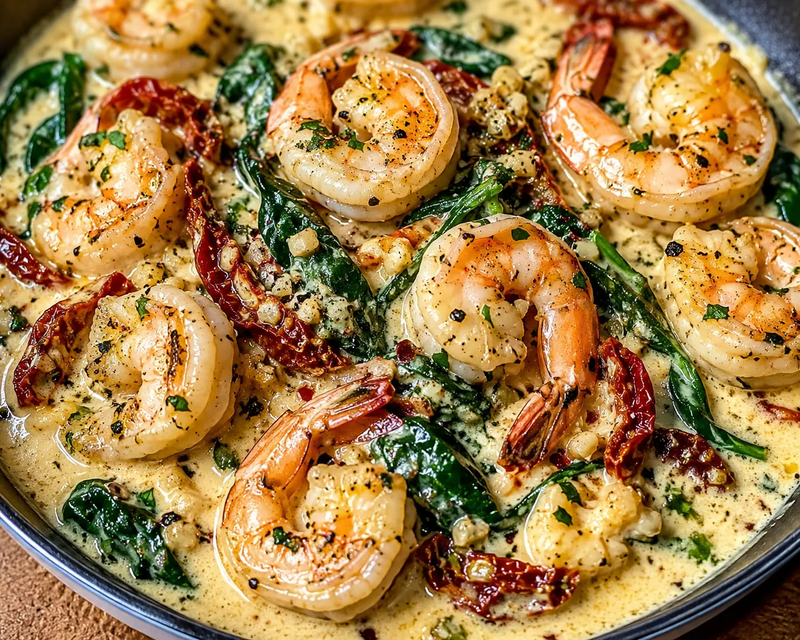

Creamy Tuscan Garlic Shrimp

Creamy Tuscan garlic shrimp is a restaurant-style dinner that comes together in one skillet in about 25 minutes. Plump shrimp are seared, then returned to a velvety garlic Parmesan cream sauce with sweet sun-dried tomatoes and wilted spinach.
The sauce is rich and savory, and it is built from just a few ingredients. Serve it over pasta, rice or creamy polenta, with crusty bread on the side to soak up every bit.
Ingredients
- 1 lb large shrimp, peeled and deveined
- 2 tbsp olive oil
- 4 cloves garlic, minced
- 1/2 cup sun-dried tomatoes, chopped
- 2 cups fresh baby spinach
- 1 cup heavy whipping cream
- 1/2 cup grated Parmesan cheese
- 1 tsp dried Italian seasoning
- Salt and crushed red pepper flakes, to taste
Instructions
- Pat the shrimp dry and season lightly with salt. Heat the olive oil in a large skillet over medium-high heat. Add the shrimp and cook for about 2 minutes per side, until pink and just opaque. Remove them to a plate.
- Lower the heat to medium. Add the garlic and sun-dried tomatoes and cook for about 1 minute, until fragrant.
- Pour in the cream and add the Italian seasoning. Bring to a gentle simmer and cook for about 3 minutes, until it begins to thicken slightly.
- Stir in the Parmesan until melted and smooth, then add the spinach and let it wilt into the sauce.
- Return the shrimp and any juices to the skillet and toss to coat. Warm through for a minute, taste, adjust the seasoning, and add red pepper flakes if you like some heat. Serve hot.
Ingredient Notes and Substitutions
Shrimp
Large shrimp (around 21 to 25 per pound) work best. Frozen shrimp are fine: thaw them in the refrigerator or in a bowl of cold water, then dry them very well so they sear instead of steam.
Sun-dried tomatoes
Oil-packed tomatoes are ready to use. If yours are dry-packed, soak them in hot water for 10 minutes and drain. A spoonful of the oil from the jar can replace some of the olive oil.
Cream
Heavy cream gives a thick, stable sauce. Half-and-half will work but gives a thinner sauce and needs a gentler simmer so it does not separate.
Parmesan
Grate it fresh from a block. Pre-shredded cheese often contains anti-caking agents and melts less smoothly.
Spinach
Baby spinach wilts quickly. Kale works too, but chop it small and give it a few extra minutes.
Tips for Success
- Shrimp cook fast. Once they curl into a loose C shape and turn pink they are done, and a tight O shape means overcooked.
- Do not crowd the pan. If needed, sear the shrimp in two batches.
- Keep the sauce at a gentle simmer rather than a hard boil to prevent the cream from splitting.
- If the sauce gets too thick, stir in a splash of pasta water, broth or milk.
- A squeeze of lemon just before serving brightens the richness.
Variations
- Add 1/4 cup dry white wine or chicken broth after the garlic and let it reduce by half before adding the cream.
- Use chicken breast strips in place of the shrimp.
- Add sliced mushrooms or roasted red peppers.
- Serve over zucchini noodles for a lighter meal.
Storage and Make-Ahead
Refrigerate leftovers in an airtight container for up to 2 days. Reheat gently over low heat with a splash of cream or milk, and stop as soon as it is warm so the shrimp stay tender. Cream sauces do not freeze well, so I do not recommend freezing this dish. To save time, you can chop the tomatoes, mince the garlic and grate the cheese ahead of time.
Frequently Asked Questions
How do I know when the shrimp are cooked?
They turn pink and opaque and curl into a loose C shape. Cooked shrimp reach 145°F (63°C) inside.
Can I make this dairy-free?
Full-fat coconut milk can stand in for the cream, but the flavor will be different and the Parmesan would need a dairy-free alternative. It will not taste like the original.
What should I serve with Tuscan shrimp?
Linguine, fettuccine, rice, polenta or crusty bread all work well, and a simple green salad balances the richness.
Why did my sauce separate?
The heat was probably too high. Keep it at a gentle simmer and add the cheese off a hard boil.
Can I use pre-cooked shrimp?
Yes, but add them at the very end just to warm through, as they turn rubbery if cooked again for long.